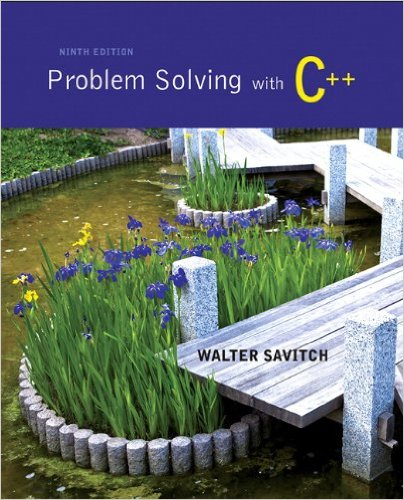

Jump to Today
Sassan Barkeshli · sxbarkeshli@pasadena.edu · R119 · Conference Hours: On Discord
Variables, expressions, input/output (I/O), branches, loops, functions, parameters, arrays, strings, file I/O, classes, polymorphisms, inheritance and multiple inheritance, recursion, pointers, linked lists, abstract data types, libraries, software design, testing, and debugging. May be taken concurrently with CS 3B. For Computer Science, Computer Engineering, Mathematics, and Science majors, but open to all qualified students. Total of 72 hours lecture and 54 hours laboratory.
Transfer Credit: CSU; UC
Links Table (Home page) — This is your main starting point and takes the place of a traditional Modules page. For each project, the Links Table gives you everything you need: the GitHub assignment link, the basic test file, and the project writeup. Class notes links will be added here as well. When in doubt, start here.
Assignments — Most useful when viewed By Type (select this in the upper-left corner of the Assignments page). You will never need to access the assignments pages. All the information you need can be found in the Links Table on the front page. Never upload anything to the assignment pages unless asked by me to do so.
Calendar — The best way to see your week and month at a glance: what's coming up, what's due, and what's overdue. Check it regularly.
Please do two things before the course gets underway:

Problem Solving with C++ (9th Edition) by Walter Savitch
This course will cover chapters 8–18 in this textbook.
This course is a continuation of the Introduction to Computer Science series, and will be a second course in C++ programming. The topics discussed in this course are:
The goal of this course will be to familiarize students with the object-oriented paradigm: Encapsulation, Inheritance, Polymorphism.
The major focus of the course will be on data abstraction.
Upon completion of the course you should be able to:
The most important principle that students must understand in this course is the encapsulation principle of object-oriented programming. Whereas in CS 2 students use primitive data types that are built-in to the C++ language, in CS 3A students will learn to create new data structures. The most important skill that students will walk away with is the ability to create classes which have an easy-to-use, intuitive interface. One of the tools that will be used to accomplish this is overloading operators.
Encapsulation: The principle of encapsulation in object-oriented programming is that the algorithms, data, and details concerning the structure of an object are hidden. Objects come with a set of member functions which can be used outside of the class, but the details of how the functions work are hidden. The goal is for students to create objects which can be used in multiple programs and classes without allowing those programs and classes to access the variables or any of the other components of the object.
Throughout each chapter you will find short sections titled Self-Test Exercises. These are brief questions that check your understanding of that section of the text. Here is what you need to do:
Along with regular programming assignments, self-tests for each chapter (found in the textbook) are due before completion of the chapter.
Projects in this course fall into three categories, depending on how they are graded:
The majority of your CS 3A projects are completed on GitHub and graded by an autograder. You can find links to these projects in the GitHub Assignment Links Table on the Canvas home page. The workflow is:
Each project in the Links Table may have up to three links:
basic_test.cpp) — a demo program showing how your classes and functions are meant to be called. This is not a correctness test and is not used to grade your program. Do not use basic_test to test your code — it will not tell you whether your implementation is correct. It is a calling-convention example only.Some project groups share a single GitHub repository across more than one project in the group — you'll work on multiple related projects inside the same repo rather than accepting a separate assignment for each one. Check the Links Table for each topic group — if there's only one GitHub Assignment link covering several rows, that's your signal the group shares a repo.
A note on Lab 01 and Lab 02: Do not accept or begin the Lab 01 or Lab 02 assignments in the Links Table. These will not be assigned for now — do not do them unless and until I specifically tell you to in class.
Projects such as the "Fun with..." series (Pointers, Linked Lists, etc.), the SFML projects (including Predator/Prey), and the Calculator project do not have an autograder. For these, accept the GitHub assignments, clone the repo, follow the written prompt provided, test your program rigorously in testB, and push the results to GitHub.
Some projects in this course are done on gentlegrader.com. Log into gentlegrader.com to see the current list of projects assigned for CS 3A. On gentlegrader, you paste your source code into the provided edit boxes and press CodeCheck — it will grade your work automatically and record your score in Canvas. Do not upload anything to Canvas for these projects. Just make sure your score appears in Canvas after running CodeCheck. If it did not record, reload the page first. If the problem persists, contact me on Discord.
Attendance is mandatory for both lab and lecture sessions. All projects are expected to be completed based on specifications discussed in class. If you are not there, you will not know what is expected.
Missing two weeks' worth of class meetings will result in being dropped from the class. Being late to class three times counts as one absence. Being more than ten minutes late counts as an absence. Please be on time.
Your deliverables fall into one of three categories:
Projects and labs: A selected number of assigned projects will be graded. But you are required to complete all assignments.
Exams: Written exams are administered in class and submitted on bluebooks (bluebooks can be purchased from the bookstore). Exams include design, implementation, and general questions about projects done in this course. There will be absolutely no make up exams given.
Final Project: There will be a substantial final project that will be designed according to specifications.
Weekly Projects make up the majority of your grade. Exams are worth approximately 10% to 15% each — I plan to give up to five exams this semester, though the exact number may vary. If a final exam is given, it is worth 30% of your grade, with the remaining weight coming from weekly projects.
Your final letter grade is not simply a weighted average. In order to earn a given grade, you must have received at least that same grade in all three categories: Weekly Projects, Exams, and Final Project/Exam. For example, to earn a B in the course, you must have at least a B in Weekly Projects, at least a B in Exams, and at least a B on the Final. Your overall grade is, in effect, the lowest of your category grades.
This policy exists because each category measures something different. Projects demonstrate that you can write code; exams demonstrate that you understand it. These are not interchangeable. A student with excellent project scores but poor exam scores has not yet shown full mastery of the material — and their grade should reflect that reality, not obscure it.
The good news: if you are doing your own work on the projects and genuinely engaging with the material, your exam scores will follow naturally.
Grade cutoffs for each category:
| Grade | Cutoff |
|---|---|
| A | 95%+ |
| B | 80%+ |
| C | 70%+ |
| D | 60%+ |
| F | other |
IMPORTANT:
What and How: All projects are to be completed to the specifications I outline in class. Both what needs to be done AND how it is to be done. Imagine me as your project leader and the customer. If you are not in class it is your responsibility to get the specifications you missed. I may not have time to repeat an entire lecture for you. This is why it is so important not to miss class.
Test your tools: Many of the projects we do for this course (and other CS courses) are tools that will be used to develop larger, more complex projects. It is important to test these tools very carefully to avoid bugs in your future projects.
Start early: Projects are always more complicated than they appear and at the same time, more daunting while you have not started and are just worried about it. Try to stay ahead of the curve. Falling behind in a CS class means projects (tools) that are not up to spec and generally lacking, causing your future projects that depend on the current ones to suffer. So, start early.
Overlapping Projects: Projects often overlap. Both in the time period they are being developed (you will be working on several projects at the same time) and in their content, meaning what you will learn in one project helps you complete the next. And they are normally designed to reinforce similar concepts. So, do not think that just because you are working on one project, you can ignore the class discussions about another project. This will hinder your ability to be in control of your work and makes you fall behind.
Don't drag your feet: The single biggest factor in good students doing poorly in CS classes is the tendency to wait until someone else has started or has completed a project before they start on theirs. Thinking "well, nobody else seems to know how to do it, so, I must be ok." This drags the level of the class down and I will not allow it. Be the student who pulls everyone else up. Take responsibility for your own success.
Testing and commenting: All assignments must be thoroughly tested and the test output must be included in your submission along with well commented source code and other include files. Commenting must be done to the point where if another programmer sees your code, they can easily understand what is happening and why. Projects submitted without an adequate test or adequately commented code could lose 10, 30, 50, or even 100% of the score. Code is of no use without a test and well commented source. The closer we get to the end of the semester, the more points is deducted from your score. Please read the deliverables page very carefully.
Late Submissions: Projects are normally due on Sundays. The project will close on Mondays (except for self test extra credit assignments). Once a project is closed, you may not submit that project. Please do not email me your project or attach it to the comments section. Canvas is often overloaded when it gets too close to the deadline. Please plan on uploading your assignment four or five hours before the deadline. Think of it this way: the projects are due at least five hours before the official deadline. Late assignments lose 10%.
Bringing food in the classroom is strictly forbidden. I will obey this rule and I expect you to obey it as well.
See Pasadena Area Community College District Policy for Student Conduct and Academic Honesty No. 4520 for the school's full policy on student conduct.
All projects are assigned as individual projects unless specifically marked as a group project. Your work must be entirely your own.
Plagiarism — using another person's words, ideas, or code as your own without proper documentation — is forbidden. This includes code: "I just got this function from Suzie" is not a defense.
Do not allow another student to log in to your Canvas account.
Do not share, show, or submit code that originated from anyone other than yourself. Students are encouraged to discuss concepts and help each other understand the material — but there is a clear line between discussing ideas and dictating or writing code for someone else. Even if you "explain it to them afterward," if the code came from you, they have committed plagiarism. If two students submit projects that are similar enough to suggest sharing, both will be found guilty, regardless of who wrote the original. Note that superficial changes — renaming variables, swapping a while loop for a for loop, reordering lines — do not make programs meaningfully different. Similarity is evaluated by the logic and structure of the solution, not surface-level wording.
The use of AI tools (including but not limited to ChatGPT, Claude, and GitHub Copilot) is restricted in this course. You may use AI to explain concepts — for example, asking "what is a binary search tree?" or "how does recursion work?" is fine. But the moment you ask an AI tool to generate code for you, fix your code, or even just tell you "what's wrong with this code," you have crossed the line into plagiarism. This is a course where you must develop fundamental programming skills through your own effort — mastering the basics is what will make you capable of using AI tools effectively later. If AI-generated or AI-corrected code appears in your submission, it will be treated as a violation of this policy regardless of whether you understood it afterward.
Cheating during exams means using anything beyond what has been specifically permitted.
In-person (bluebook) exams: Only your bluebook, pen, pencil, and eraser are allowed — nothing else.
In-person (laptop) exams: These exams are administered face-to-face in class, on your laptop. You must remain on the exam application or page for the entire duration of the exam. Navigating to another tab, window, or application constitutes cheating.
Failure to follow this policy will result in disciplinary action, which can affect your academic standing in the College. Consequences include:
Every violation will be acted on — there are no exceptions. Students found in violation may be asked to explain their work. How are you going to explain why your code looks exactly like a classmate's? Students will have an opportunity to discuss suspected violations before consequences are finalized.
If you need technical assistance at any time during the orientation or to report a problem you can contact PCC's 24/7 Technical Support Center at online.pasadena.edu/canvas-support.
You can get in-person help on-campus at the D Building Learning Assistance Center. Tutors at the center are trained to help students with CANVAS and its tools.
It is also helpful if you let me know what kinds of difficulties you encounter so that I can change the course for future students so they don't have the same issues.
There are many services on campus to help you achieve success in your courses. Check out the Student Services link for information on 24/7 library services, online tutoring computer lab hours and research help.